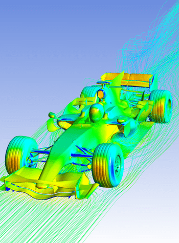
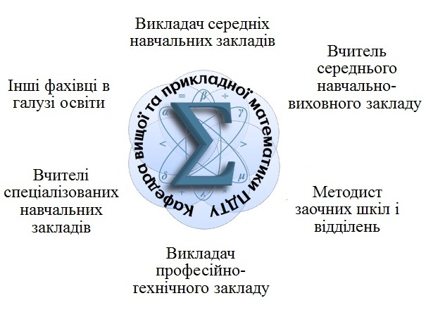
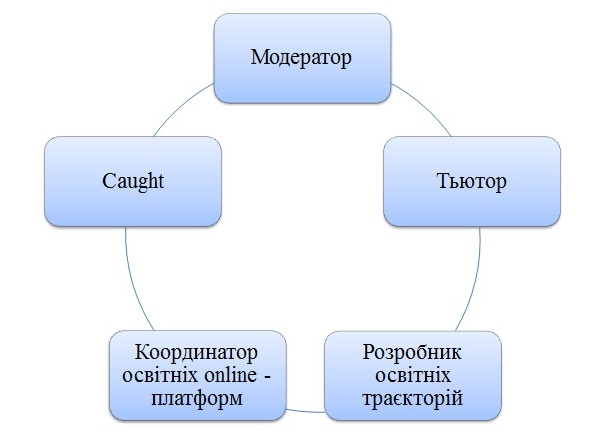

Прикладна математика
Сучасні світові тенденції в галузі моделювання, дослідження та аналізу прикладних задач та інформаційних потоків, що
виникають у різних сферах науки та техніки, передбачають розроблення нових нетрадиційних підходів з використанням
сучасних інформаційних технологій. Розрахунки реальних процесів, завдань засновані на складних математичних методах, які
є об’єктом вивчення фахівців з прикладної математики. Це зумовлює потребу у підготовці фахівців з прикладної математики
за ОП «Комп’ютерне моделювання».
IT-технології
- Мови програмування C++, C#
- Об’єктно-орієнтоване програмування
- Web-технології HTML5/CSS3/JS
- Бази даних, SQL
- Бази знань, Prolog
- Комп’ютені мережі
- Системне програмування
+
Аналітика
- Теорія систем та системний аналіз
- Аналіз даних
- Штучний інтелект
- Excel + програмування VBA
- Прикладні пакети Matlab, Wolfram matematika, Mathcad
- Математична статистика та методи оптимізації
+

Моделювання
- Імітаційне AnyLogic + Java
- Математичне моделювання
- Комп’ютерне 3DsMax, Blender
- Мультифізичне Comsol Multiphysics
- Спеціалізовані пакети обробки мультимедіа
- Photoshop
Середня освіта - математика
Держава має широку мережу шкільних закладів: загальноосвітні школи, гімназії, ліцеї, колегіуми, навчально-виховні
комплекси, де навчається багато дітей, серед них є обдаровані, зацікавлені математикою. Та, нажаль, у школах
відчувається дефіцит учителів математики та інформатики, тому випускники за спеціальністю середня освіта «Математика»
обов’язково знайдуть своє місце на ринку праці. Володіння ІКТ, яке передбачає ОП, гарантує їм можливість працювати, у
тому числі, і дистанційно.
Традиційні та сучасні професії в освіті


ЩЩорічно кафедрою проводяться наукові конференції та круглі столи за участю роботодавців з проблем професійної освіти
майбутніх фахівців. Кафедрою постійно проводиться моніторинг ринку праці стосовно попиту на фахівців вказаних
спеціальностей та вимог до їх підготовки.
ОП «Комп’ютерне моделювання» та ОП «Математика» передбачають формування загальних компетентностей, що є складовими
соціальних навичок (softskills). Під час навчання при викладанні перевага надається евристичним методам навчання, які
дозволяють формувати вміння стратегічного характеру (здобувати нові знання, критично переоцінювати ситуацію, здійснювати
аналіз та самоаналіз, оцінювати способи та методи своєї діяльності з точки зору ефективності та доцільності, оцінювати
якість результатів). Методи, обрані викладачами, сприяють формуванню вміння працювати в команді, комунікабельності,
формуванню лідерських якостей студентів, усвідомленню своєї ролі в команді та відповідальності за колективний результат.